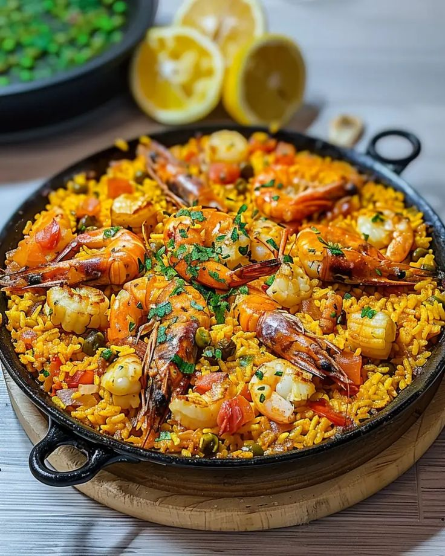

Paella

La paella es un plato tradicional español originario de la región de
Valencia. Se caracteriza por ser una preparación de arroz con una
variedad de ingredientes que pueden incluir mariscos, carnes, verduras
y especias. El ingrediente principal es el arroz, que se cocina en una
paellera, una sartén ancha y poco profunda que permite una cocción
uniforme.
Ingredientes:
- Arroz: Preferiblemente arroz de grano corto o tipo
bomba.
- Mariscos: gambas, mejillones y calamares (
en la paella de mariscos).
- Pollo: Cortado en trozos (en la paella mixta o de
carne).
- Conejo: Opcional, pero tradicional en la paella
valenciana.
- Judía verde: O ejotes, para añadir textura
y sabor.
- Tomate: Normalmente se utiliza en forma de puré
o rallado.
- Pimiento rojo: Para dar sabor y color.
- Ajo: Para el sofrito.
- Azafrán: Para dar color y sabor característico.
- Caldo: De pollo, de mariscos o de verduras,
dependiendo de la variedad de la paella.
- Aceite de oliva: Para cocinar.
Pasos
- Preparar los Ingredientes:
Lava y corta todas las verduras. Si usas mariscos frescos,
límpialos adecuadamente.
- sofrito:
- En una paellera o sartén grande, calienta el
aceite de oliva a fuego medio-alto.
- Agrega el pollo y el conejo (si los usas) y dora bien por
todos lados. Retira y reserva.
- En la misma paellera, agrega el ajo y la cebolla
(si la usas) y sofríe hasta que estén dorados.
- Añade los tomates rallados y cocina a fuego lento hasta que
se reduzca y espese un poco.
- Agregar Verduras:
- Incorpora la judía verde y el pimiento rojo.
Cocina por unos minutos hasta que empiecen a ablandarse.
- Añadir el Arroz:
- Añade el arroz a la paellera y remueve para que se mezcle
bien con el sofrito y las verduras.
- Añadir el Caldo:
- Vierte el caldo caliente (donde habrás disuelto el azafrán)
sobre el arroz. No revuelvas el arroz una vez que agregues
el caldo. Cocina a fuego medio-alto durante unos
10 minutos.
- Agregar Mariscos:
- Coloca los mariscos (gambas, mejillones, calamares) sobre
el arroz. Reduce el fuego a medio-bajo y cocina durante
unos 10-15 minutos adicionales, o hasta que el arroz esté
cocido y haya absorbido el caldo.
- Reposar:
- Cuando el arroz esté cocido, retira la paellera del fuego y
deja reposar la paella tapada con un paño limpio durante
unos 5 minutos.
- servir
- Sirve la paella directamente desde la paellera, decorada
con rodajas de limón.